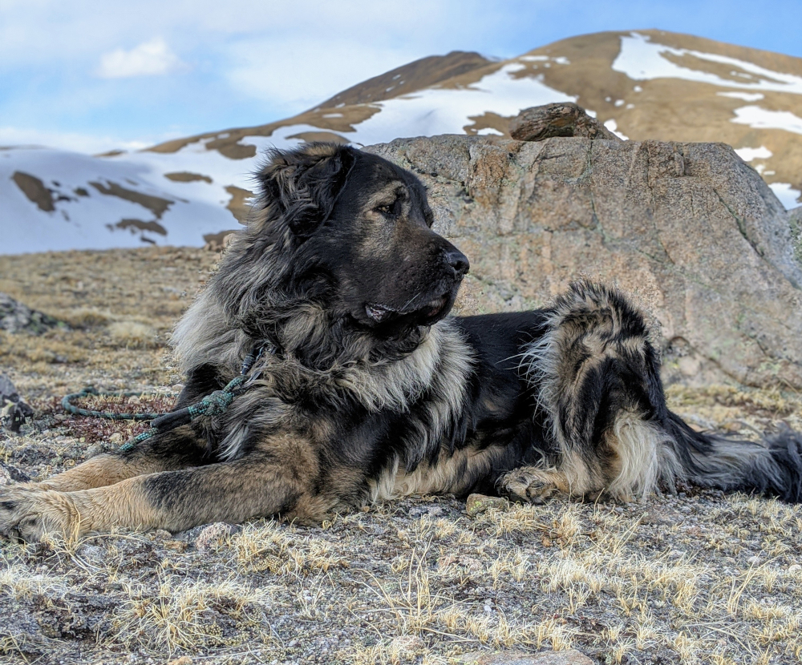
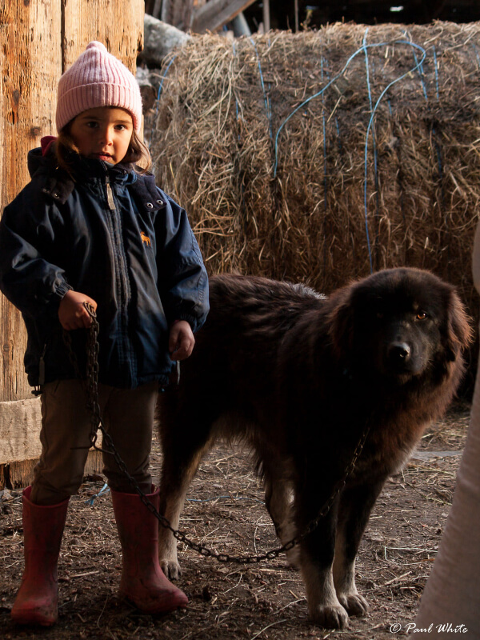

Sarplaninac on a mountain watching closely for predators
General Appearance
The Sarplaninac is a well-proportioned and robust breed of working dog. They can appear bigger than they are due to a large bone mass and a thick, coarse and long double-coat. With iron-grey being a very common coat color, the Sarplaninac's coat can range from solid white to a very dark brown that is nearly black. Their ears are drop and V-shaped and their tails are long and carried like a saber.
Temperament
Like many livestock guardian breeds, the Sarplaninac is highly intelligent and independent. If they do not have a flock to protect, their "flock" will take the form of the family. To their masters, they are loyal and unwavering. Sarplaninac are typically very suspicious of strangers in the absence of a trusted family member. With an even keel, they are calm and steady guardians; however, if they perceive a threat, they are quick to react and fearlessly will protect their flock. Being the independent thinkers that they are, Sarplaninac are not very subservient; They require a strong leader, but also not a domination driven relationship. They are a fairly stubborn, strong and dominant breed and therefore are not recommended for new dog owners who are unfamiliar with handling large breeds.

A young girl and her Sarplaninac Photo by Paul White
Characteristics
Although they are not the largest of the available options when it comes to livestock guardian breeds, the Sarplaninac is characterized as having immense strength, accompanied by a set of large teeth, making it a force to be reckoned with when confronting predatory animals. According to the FCI standard mature males (in good working condition) should weigh between 77 and 99lbs & females (in good working condition) should weigh between 66 and 88 lbs.
Click below to find out more information on the breed standard of the Sarplaninac.